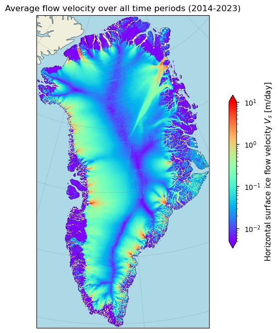
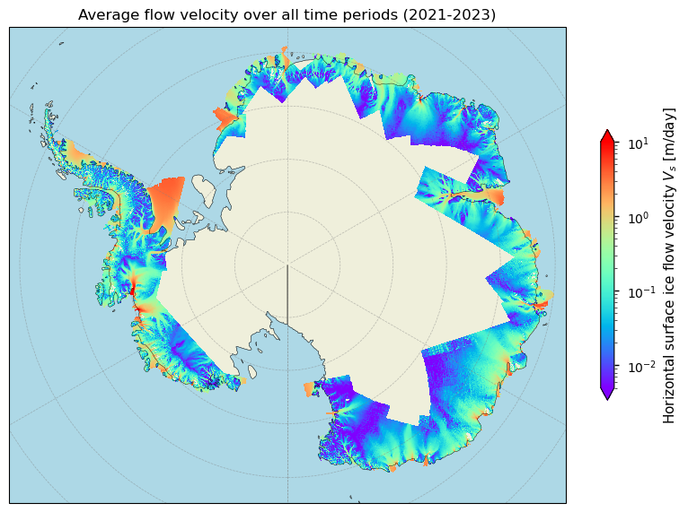
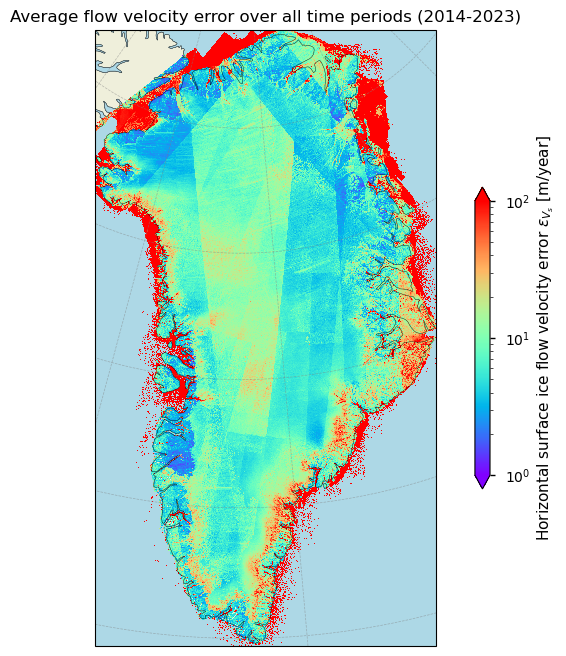
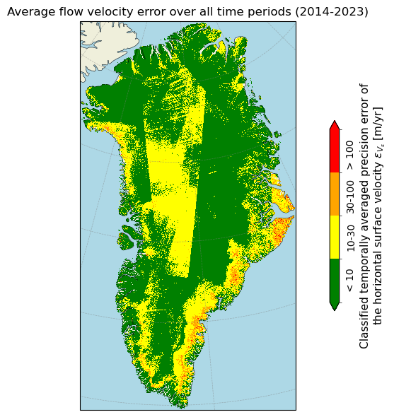
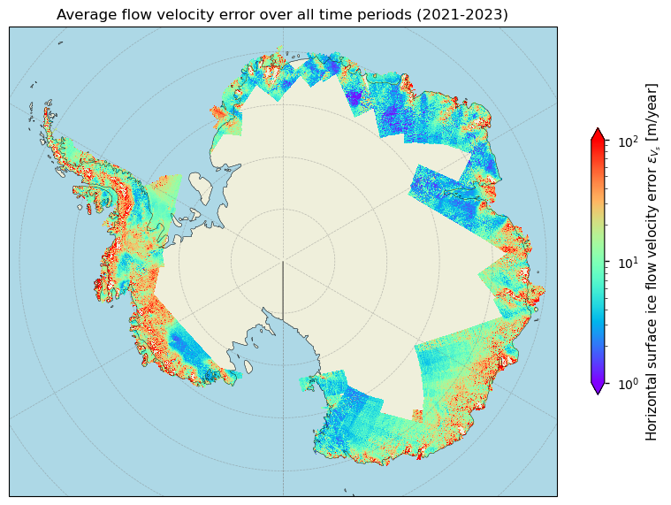
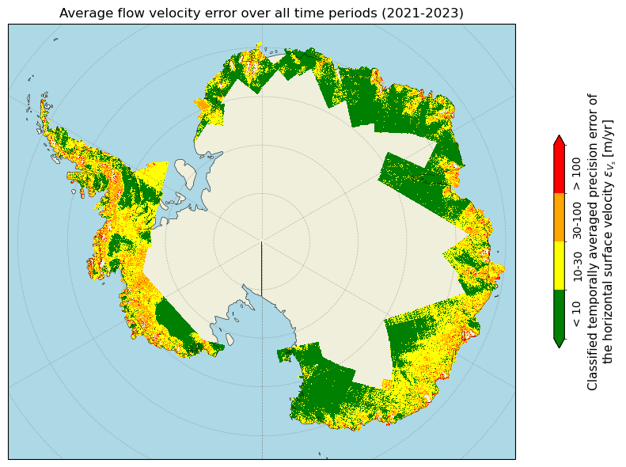
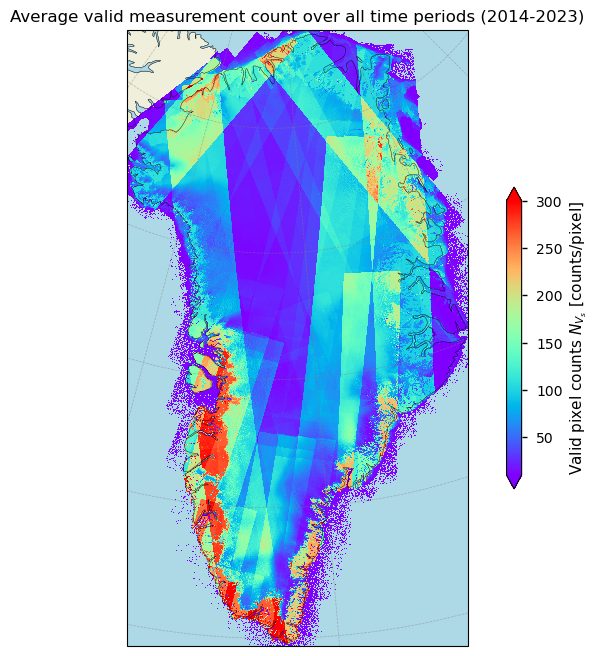
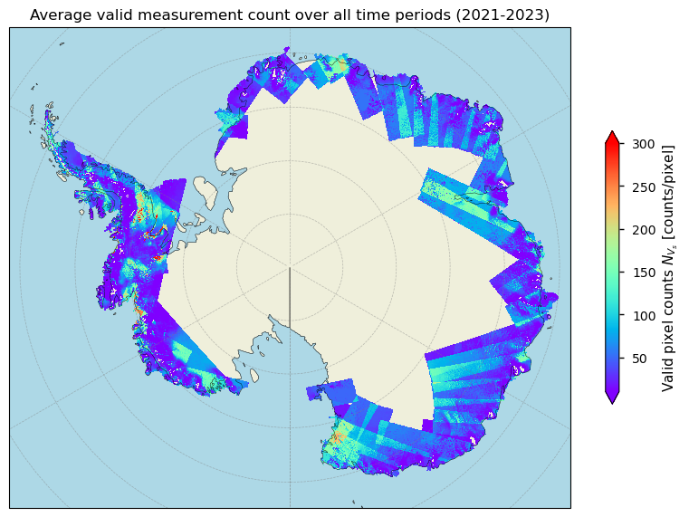

1.3.1. Ice sheet velocity data from satellite observations: temporal and spatial variability of velocity-related uncertainties for glaciological applications#
Production date: 30-04-2026
Dataset version: 1.3 to 1.5
Produced by: Yoni Verhaegen and Philippe Huybrechts (Vrije Universiteit Brussel)
🌍 Use case: Using remote sensing-derived ice sheet surface flow velocities for the calibration or validation of a simulation with an ice sheet model#
❓ Quality assessment question#
“How does the uncertainty of the horizontal ice sheet surface flow velocity vary in space and time and is the dataset sufficiently accurate and precise to be used in an ice sheet modeling framework?”
Ice sheets are not static, but instead flow. The total velocity magnitude is the sum of the velocity related to internal ice deformation, and is complemented by basal sliding and bed deformation components. Mapping ice sheet surface flow velocities and their temporal changes provides key information for investigating the dynamic response of the ice sheets to climate change. Remote sensing techniques, such as the use of satellites, are an important feature to derive and study these flow velocities. Satellites are able to inspect directly and repeatedly large areas of ice, and, as such are able to detect the movement of its surface. Remote sensing techniques that use satellite data are therefore considered the only feasible manner to derive accurate surface velocities of the ice sheets on a regular basis. In this dataset, they are derived by applying offset tracking techniques using Sentinel-1 Synthetic Aperture Radar (SAR) satellite data. The main principle of the “Ice sheet velocity for Antarctica and Greenland derived from satellite observations” dataset therefore relies on the preservation of surface features or other detectable patterns (e.g. speckle) in between multiple image acquisition periods. The extraction of these features/patterns from images acquired over different time periods is used to detect their displacements, and with further processing this information can be used to derive velocity fields [1, 11].
This notebook investigates how well the dataset on the CDS (here we use versions 1.3 to 1.5) can be used in the context of an ice sheet modelling framework for Greenland and Antarctica. More specifically, the notebook evaluates whether the dataset is of sufficient maturity and quality for that purpose in terms of its spatio-temporal coverage and uncertainty.
📢 Quality assessment statement#
These are the key outcomes of this assessment
Surface ice flow velocity (“displacement”) observation by satellites is a useful tool to grasp the overall patterns of flow dynamics of the ice sheets. The corresponding data quality of the C3S ice sheet velocity dataset in terms of error and uncertainty can be assessed by two variables: the standard deviation (as a precision error estimate) and the valid pixel count maps (as the total number of valid measurements used in the annually averaged velocity estimate over 1 year of data acquisition). The majority of pixels are found to meet the proposed GCOS thresholds in terms of their precision errors. However, data quality can be slightly lower in some regions (due to arteficial ‘striping’, higher precision error values and/or lower valid measurements). Errors are furthermore provided as absolute values, while for flow fields, the relative error is generally considered to be more useful.
Due to the high spatial resolution/coverage and the quality-rich uncertainty characterization, the C3S ice sheet velocity dataset is particularly well-suited for certain glaciological applications, such as the use as a calibration or validation tool within an ice sheet modelling framework. The user can, if desired, prioritize high-quality data (i.e. pixels with low errors and/or high valid pixel counts) when adjusting tuning parameters in an ice sheet model, such that the modelled ice thickness or surface velocity matches the observed one as close as possible. Potential limitations to keep in mind when doing so include the absence of information on acquisition timing, no flagging of spatially filled pixels, the lack of an ice mask to exclude non-ice-covered cells, extensive missing data for the AIS interior, and the relatively short temporal span of the data.
📋 Methodology#
Dataset description#
The ‘Ice sheet velocity for Antarctica and Greenland derived from satellite observations’ dataset, available on the Climate Data Store (CDS), offers annually averaged surface ice flow velocities and their easting and northing components for the Antarctic (AIS) and Greenland (GrIS) Ice Sheets. This data is provided on a spatial resolution grid of either 200 m, 250 m or 500 m, depending on the ice sheet and dataset version. The dataset includes horizontal velocity components in the east and north directions, as well as the total horizontal velocity magnitude and its uncertainty, expressed as 1-sigma precision errors. Surface flow velocities are treated as “displacements”, normalized to true meters per day, and are available for each glaciological year since 2014-2015 for the GrIS and since 2021-2022 for the AIS. The horizontal velocities and their components are derived using offset tracking techniques with Sentinel-1 SAR satellite data. The data are provided in NetCDF format as gridded data fields in Polar Stereographic projection, covering the entire GrIS domain, including peripheral glaciers and ice caps, and the marginal areas of the AIS in the current version.
Structure and (sub)sections#
1. Data preparation and processing
2. Ice sheet flow velocities and their uncertainty estimates in space and time
2.3 Spatio-temporal distribution of ice flow velocity uncertainty for the GrIS
2.4 Spatio-temporal distribution of ice flow velocity uncertainty for the AIS
3. Valid measurement counts for the surface ice flow velocity
3.1 Spatio-temporal distribution of ice flow velocity valid pixel counts for the GrIS
3.2 Spatio-temporal distribution of ice flow velocity valid pixel counts for the AIS
4. Implications for use of horizontal ice flow velocity data in an ice sheet modelling framework
📈 Analysis and results#
1. Data preparation and processing#
1.1 Import packages#
First we load the packages:
Show code cell source
Hide code cell source
import matplotlib.colors
import matplotlib.pyplot as plt
import cartopy.crs as ccrs
import cartopy.feature as cfeature
import numpy as np
import xarray as xr
import math
import matplotlib.ticker as ticker
from scipy.stats import circmean
from c3s_eqc_automatic_quality_control import download
import os
plt.style.use("seaborn-v0_8-notebook")
1.2 Define request and download#
Then we define requests for download from the CDS and download the GrIS and AIS velocity data and immediately perform some data handling to make the dataset more readable.
🚨 The files can be large! Since the data files to be downloaded are of considerable size due to the high spatial resolution, this may take a couple of minutes.
Show code cell source
Hide code cell source
periods = {
"greenland_ice_sheet": ["2014_2015", "2022_2023"],
"antarctic_ice_sheet": ["2021_2022", "2022_2023"],
}
assert all([len(value) == 2 for value in periods.values()])
print("Downloading ice sheet velocity data, this make take a couple of minutes...")
def compute_std_flowdirection_and_reform(ds):
# Add period dim
start, stop = ds.summary.strip(".").split("from")[-1].split("to")
period = "-".join([start.strip()[:4], stop.strip()[:4]])
ds = ds.squeeze("source").expand_dims(period=[period])
# Compute standard deviation
std = (
ds["land_ice_surface_easting_stddev"] ** 2
+ ds["land_ice_surface_northing_stddev"] ** 2
) ** 0.5
std.attrs = {
"long_name": "Velocity standard deviation",
"units": ds["land_ice_surface_easting_stddev"].attrs.get("units", "m/year"),
}
ds["land_ice_surface_stddev"] = std
# Flow direction
angle_radians = np.arctan2(
ds["land_ice_surface_northing_velocity"],
ds["land_ice_surface_easting_velocity"],
)
angle_degrees = np.degrees(angle_radians)
flow_direction = (90 - angle_degrees) % 360
flow_direction.attrs = {
"long_name": "Flow direction",
"units": "degrees",
}
ds["land_ice_flow_direction"] = flow_direction
# Keep only selected variables
keep_vars = [
"land_ice_surface_velocity_magnitude",
"land_ice_surface_measurement_count",
"land_ice_surface_stddev",
"land_ice_flow_direction",
]
ds = ds[keep_vars]
for var in ds.data_vars:
ds[var].encoding["chunksizes"] = tuple(map(max, ds[var].chunks))
return ds
def postprocess(ds):
for name, da in ds.data_vars.items():
if name == "land_ice_surface_measurement_count":
da.attrs["units"] = "image pairs"
da.attrs["long_name"] = "Count of valid measurements"
if name == "land_ice_flow_direction":
da.attrs["units"] = "degrees"
da.attrs["long_name"] = "Flow direction"
if name == "land_ice_surface_velocity_magnitude":
da.attrs["units"] = "m/year"
da.attrs["long_name"] = "Velocity magnitude"
if name == "land_ice_surface_stddev":
da.attrs["units"] = "m/year"
da.attrs["long_name"] = "Velocity standard deviation"
if "long_name" not in da.attrs:
da.attrs["long_name"] = da.attrs.get("description", name.replace("_", " "))
return ds
collection_id = "satellite-greenland-ice-sheet-velocity"
request = {
"variable": "all",
"format": "zip",
}
datasets = {}
for domain, (period_start, period_stop) in periods.items():
print(f"{domain = }")
requests = []
y0_start, y1_start = map(int, period_start.split("_"))
y0_stop, y1_stop = map(int, period_stop.split("_"))
for y0, y1 in zip(range(y0_start, y0_stop + 1), range(y1_start, y1_stop + 1)):
period = f"{y0}_{y1}"
if y0 >= 2021:
version = "1_5"
elif y0 >= 2020:
version = "1_4"
else:
version = "1_3"
requests.append(
request | {"domain": domain} | {"version": version, "period": period}
)
ds = download.download_and_transform(
collection_id,
requests,
transform_func=compute_std_flowdirection_and_reform,
)
datasets[domain] = postprocess(ds)
print("Downloading ice sheet velocity data complete.")
Downloading ice sheet velocity data, this make take a couple of minutes...
domain = 'greenland_ice_sheet'
33%|███▎ | 3/9 [00:00<00:00, 23.83it/s]2026-03-15 13:36:19,001 INFO Request ID is 574f121c-2667-4242-8e80-c266d9ee049e
2026-03-15 13:36:19,291 INFO status has been updated to accepted
33%|███▎ | 3/9 [00:16<00:00, 23.83it/s]2026-03-15 13:36:40,382 INFO status has been updated to running
2026-03-15 13:38:13,054 INFO status has been updated to successful
6be3e28c0a24245d4bec0e1dffe4d5d1.zip: 0%| | 0.00/663M [00:00<?, ?B/s]
6be3e28c0a24245d4bec0e1dffe4d5d1.zip: 1%| | 5.00M/663M [00:00<00:31, 21.6MB/s]
6be3e28c0a24245d4bec0e1dffe4d5d1.zip: 4%|▍ | 29.0M/663M [00:00<00:06, 107MB/s]
6be3e28c0a24245d4bec0e1dffe4d5d1.zip: 8%|▊ | 51.0M/663M [00:00<00:04, 138MB/s]
6be3e28c0a24245d4bec0e1dffe4d5d1.zip: 13%|█▎ | 83.0M/663M [00:00<00:03, 191MB/s]
6be3e28c0a24245d4bec0e1dffe4d5d1.zip: 16%|█▌ | 104M/663M [00:00<00:03, 189MB/s]
6be3e28c0a24245d4bec0e1dffe4d5d1.zip: 21%|██ | 137M/663M [00:00<00:02, 233MB/s]
6be3e28c0a24245d4bec0e1dffe4d5d1.zip: 24%|██▍ | 162M/663M [00:00<00:02, 225MB/s]
6be3e28c0a24245d4bec0e1dffe4d5d1.zip: 30%|███ | 202M/663M [00:01<00:01, 279MB/s]
6be3e28c0a24245d4bec0e1dffe4d5d1.zip: 35%|███▍ | 231M/663M [00:01<00:02, 161MB/s]
6be3e28c0a24245d4bec0e1dffe4d5d1.zip: 38%|███▊ | 253M/663M [00:01<00:02, 167MB/s]
6be3e28c0a24245d4bec0e1dffe4d5d1.zip: 42%|████▏ | 280M/663M [00:01<00:02, 190MB/s]
6be3e28c0a24245d4bec0e1dffe4d5d1.zip: 46%|████▌ | 303M/663M [00:01<00:01, 194MB/s]
6be3e28c0a24245d4bec0e1dffe4d5d1.zip: 49%|████▉ | 325M/663M [00:01<00:01, 197MB/s]
6be3e28c0a24245d4bec0e1dffe4d5d1.zip: 52%|█████▏ | 347M/663M [00:01<00:01, 194MB/s]
6be3e28c0a24245d4bec0e1dffe4d5d1.zip: 56%|█████▋ | 374M/663M [00:02<00:01, 216MB/s]
6be3e28c0a24245d4bec0e1dffe4d5d1.zip: 60%|█████▉ | 397M/663M [00:02<00:01, 203MB/s]
6be3e28c0a24245d4bec0e1dffe4d5d1.zip: 63%|██████▎ | 419M/663M [00:02<00:01, 210MB/s]
6be3e28c0a24245d4bec0e1dffe4d5d1.zip: 66%|██████▋ | 440M/663M [00:02<00:01, 210MB/s]
6be3e28c0a24245d4bec0e1dffe4d5d1.zip: 72%|███████▏ | 479M/663M [00:02<00:00, 252MB/s]
6be3e28c0a24245d4bec0e1dffe4d5d1.zip: 76%|███████▌ | 504M/663M [00:02<00:00, 246MB/s]
6be3e28c0a24245d4bec0e1dffe4d5d1.zip: 80%|████████ | 532M/663M [00:02<00:00, 259MB/s]
6be3e28c0a24245d4bec0e1dffe4d5d1.zip: 84%|████████▍ | 557M/663M [00:02<00:00, 206MB/s]
6be3e28c0a24245d4bec0e1dffe4d5d1.zip: 87%|████████▋ | 579M/663M [00:03<00:00, 187MB/s]
6be3e28c0a24245d4bec0e1dffe4d5d1.zip: 90%|█████████ | 599M/663M [00:03<00:00, 187MB/s]
6be3e28c0a24245d4bec0e1dffe4d5d1.zip: 93%|█████████▎| 618M/663M [00:03<00:00, 188MB/s]
6be3e28c0a24245d4bec0e1dffe4d5d1.zip: 99%|█████████▉| 655M/663M [00:03<00:00, 200MB/s]
0%| | 0/1 [00:00<?, ?it/s]
100%|██████████| 1/1 [00:00<00:00, 1.03it/s]
78%|███████▊ | 7/9 [02:39<00:52, 26.19s/it]2026-03-15 13:38:58,622 INFO Request ID is de1de559-4285-4e54-9635-7f120ec691c3
2026-03-15 13:38:58,650 INFO status has been updated to accepted
2026-03-15 13:39:07,178 INFO status has been updated to running
2026-03-15 13:39:48,417 INFO status has been updated to successful
4aa6799016f36cd541cdfa03a00b2df9.zip: 0%| | 0.00/623M [00:00<?, ?B/s]
4aa6799016f36cd541cdfa03a00b2df9.zip: 1%|▏ | 9.00M/623M [00:00<00:13, 47.5MB/s]
4aa6799016f36cd541cdfa03a00b2df9.zip: 5%|▌ | 33.0M/623M [00:00<00:04, 132MB/s]
4aa6799016f36cd541cdfa03a00b2df9.zip: 9%|▉ | 55.0M/623M [00:00<00:03, 168MB/s]
4aa6799016f36cd541cdfa03a00b2df9.zip: 12%|█▏ | 74.0M/623M [00:00<00:03, 172MB/s]
4aa6799016f36cd541cdfa03a00b2df9.zip: 16%|█▌ | 99.0M/623M [00:00<00:02, 197MB/s]
4aa6799016f36cd541cdfa03a00b2df9.zip: 19%|█▉ | 119M/623M [00:00<00:03, 152MB/s]
4aa6799016f36cd541cdfa03a00b2df9.zip: 22%|██▏ | 136M/623M [00:00<00:03, 145MB/s]
4aa6799016f36cd541cdfa03a00b2df9.zip: 24%|██▍ | 152M/623M [00:01<00:03, 124MB/s]
4aa6799016f36cd541cdfa03a00b2df9.zip: 27%|██▋ | 166M/623M [00:01<00:04, 112MB/s]
4aa6799016f36cd541cdfa03a00b2df9.zip: 29%|██▉ | 183M/623M [00:01<00:03, 120MB/s]
4aa6799016f36cd541cdfa03a00b2df9.zip: 33%|███▎ | 208M/623M [00:01<00:02, 152MB/s]
4aa6799016f36cd541cdfa03a00b2df9.zip: 36%|███▌ | 225M/623M [00:01<00:02, 157MB/s]
4aa6799016f36cd541cdfa03a00b2df9.zip: 40%|███▉ | 249M/623M [00:01<00:02, 181MB/s]
4aa6799016f36cd541cdfa03a00b2df9.zip: 44%|████▍ | 274M/623M [00:01<00:01, 202MB/s]
4aa6799016f36cd541cdfa03a00b2df9.zip: 50%|█████ | 313M/623M [00:01<00:01, 248MB/s]
4aa6799016f36cd541cdfa03a00b2df9.zip: 55%|█████▌ | 343M/623M [00:02<00:01, 266MB/s]
4aa6799016f36cd541cdfa03a00b2df9.zip: 60%|██████ | 374M/623M [00:02<00:00, 281MB/s]
4aa6799016f36cd541cdfa03a00b2df9.zip: 65%|██████▍ | 404M/623M [00:02<00:00, 290MB/s]
4aa6799016f36cd541cdfa03a00b2df9.zip: 70%|██████▉ | 433M/623M [00:02<00:00, 201MB/s]
4aa6799016f36cd541cdfa03a00b2df9.zip: 76%|███████▋ | 475M/623M [00:02<00:00, 227MB/s]
4aa6799016f36cd541cdfa03a00b2df9.zip: 82%|████████▏ | 509M/623M [00:02<00:00, 242MB/s]
4aa6799016f36cd541cdfa03a00b2df9.zip: 86%|████████▌ | 535M/623M [00:02<00:00, 236MB/s]
4aa6799016f36cd541cdfa03a00b2df9.zip: 92%|█████████▏| 571M/623M [00:03<00:00, 238MB/s]
4aa6799016f36cd541cdfa03a00b2df9.zip: 98%|█████████▊| 608M/623M [00:03<00:00, 272MB/s]
0%| | 0/1 [00:00<?, ?it/s]
100%|██████████| 1/1 [00:00<00:00, 1.11it/s]
89%|████████▉ | 8/9 [04:03<00:37, 37.13s/it]2026-03-15 13:40:22,586 INFO Request ID is 0e7addae-7a26-4849-9af1-54bb0e66bcc6
2026-03-15 13:40:22,620 INFO status has been updated to accepted
2026-03-15 13:40:43,606 INFO status has been updated to running
2026-03-15 13:41:12,125 INFO status has been updated to successful
5ac091545005a98b24de29b77445abff.zip: 0%| | 0.00/625M [00:00<?, ?B/s]
5ac091545005a98b24de29b77445abff.zip: 3%|▎ | 16.0M/625M [00:00<00:03, 164MB/s]
5ac091545005a98b24de29b77445abff.zip: 5%|▌ | 32.0M/625M [00:00<00:04, 153MB/s]
5ac091545005a98b24de29b77445abff.zip: 9%|▉ | 55.0M/625M [00:00<00:03, 190MB/s]
5ac091545005a98b24de29b77445abff.zip: 13%|█▎ | 84.0M/625M [00:00<00:02, 232MB/s]
5ac091545005a98b24de29b77445abff.zip: 17%|█▋ | 107M/625M [00:00<00:04, 128MB/s]
5ac091545005a98b24de29b77445abff.zip: 22%|██▏ | 137M/625M [00:00<00:03, 167MB/s]
5ac091545005a98b24de29b77445abff.zip: 25%|██▌ | 159M/625M [00:00<00:02, 180MB/s]
5ac091545005a98b24de29b77445abff.zip: 29%|██▉ | 181M/625M [00:01<00:02, 182MB/s]
5ac091545005a98b24de29b77445abff.zip: 34%|███▎ | 210M/625M [00:01<00:02, 212MB/s]
5ac091545005a98b24de29b77445abff.zip: 38%|███▊ | 237M/625M [00:01<00:01, 230MB/s]
5ac091545005a98b24de29b77445abff.zip: 42%|████▏ | 263M/625M [00:01<00:01, 237MB/s]
5ac091545005a98b24de29b77445abff.zip: 48%|████▊ | 299M/625M [00:01<00:01, 262MB/s]
5ac091545005a98b24de29b77445abff.zip: 52%|█████▏ | 325M/625M [00:01<00:01, 251MB/s]
5ac091545005a98b24de29b77445abff.zip: 58%|█████▊ | 363M/625M [00:01<00:00, 289MB/s]
5ac091545005a98b24de29b77445abff.zip: 63%|██████▎ | 392M/625M [00:01<00:00, 289MB/s]
5ac091545005a98b24de29b77445abff.zip: 67%|██████▋ | 421M/625M [00:02<00:00, 238MB/s]
5ac091545005a98b24de29b77445abff.zip: 71%|███████▏ | 446M/625M [00:02<00:00, 202MB/s]
5ac091545005a98b24de29b77445abff.zip: 76%|███████▌ | 473M/625M [00:02<00:00, 220MB/s]
5ac091545005a98b24de29b77445abff.zip: 80%|████████ | 501M/625M [00:02<00:00, 237MB/s]
5ac091545005a98b24de29b77445abff.zip: 84%|████████▍ | 526M/625M [00:02<00:00, 233MB/s]
5ac091545005a98b24de29b77445abff.zip: 88%|████████▊ | 550M/625M [00:02<00:00, 219MB/s]
5ac091545005a98b24de29b77445abff.zip: 92%|█████████▏| 577M/625M [00:02<00:00, 229MB/s]
5ac091545005a98b24de29b77445abff.zip: 96%|█████████▌| 600M/625M [00:02<00:00, 209MB/s]
5ac091545005a98b24de29b77445abff.zip: 100%|█████████▉| 622M/625M [00:03<00:00, 213MB/s]
0%| | 0/1 [00:00<?, ?it/s]
100%|██████████| 1/1 [00:00<00:00, 1.11it/s]
100%|██████████| 9/9 [05:26<00:00, 36.32s/it]
domain = 'antarctic_ice_sheet'
0%| | 0/2 [00:00<?, ?it/s]2026-03-15 13:41:46,063 INFO Request ID is 3347dd70-3ccb-4951-8340-1f31a9017781
2026-03-15 13:41:46,097 INFO status has been updated to accepted
2026-03-15 13:42:07,048 INFO status has been updated to running
2026-03-15 13:44:37,445 INFO status has been updated to successful
1f705b1208093192fbb8b69381eb4ba7.zip: 0%| | 0.00/2.38G [00:00<?, ?B/s]
1f705b1208093192fbb8b69381eb4ba7.zip: 0%| | 9.00M/2.38G [00:00<00:27, 94.1MB/s]
1f705b1208093192fbb8b69381eb4ba7.zip: 1%| | 18.0M/2.38G [00:00<01:06, 38.2MB/s]
1f705b1208093192fbb8b69381eb4ba7.zip: 2%|▏ | 40.0M/2.38G [00:00<00:29, 86.3MB/s]
1f705b1208093192fbb8b69381eb4ba7.zip: 3%|▎ | 64.0M/2.38G [00:00<00:19, 129MB/s]
1f705b1208093192fbb8b69381eb4ba7.zip: 3%|▎ | 81.0M/2.38G [00:00<00:18, 136MB/s]
1f705b1208093192fbb8b69381eb4ba7.zip: 4%|▍ | 103M/2.38G [00:00<00:15, 162MB/s]
1f705b1208093192fbb8b69381eb4ba7.zip: 5%|▍ | 121M/2.38G [00:00<00:15, 161MB/s]
1f705b1208093192fbb8b69381eb4ba7.zip: 6%|▌ | 149M/2.38G [00:01<00:12, 197MB/s]
1f705b1208093192fbb8b69381eb4ba7.zip: 8%|▊ | 187M/2.38G [00:01<00:10, 221MB/s]
1f705b1208093192fbb8b69381eb4ba7.zip: 9%|▉ | 229M/2.38G [00:01<00:08, 277MB/s]
1f705b1208093192fbb8b69381eb4ba7.zip: 11%|█ | 257M/2.38G [00:01<00:08, 270MB/s]
1f705b1208093192fbb8b69381eb4ba7.zip: 12%|█▏ | 291M/2.38G [00:01<00:08, 257MB/s]
1f705b1208093192fbb8b69381eb4ba7.zip: 14%|█▎ | 333M/2.38G [00:01<00:08, 250MB/s]
1f705b1208093192fbb8b69381eb4ba7.zip: 15%|█▌ | 372M/2.38G [00:01<00:07, 286MB/s]
1f705b1208093192fbb8b69381eb4ba7.zip: 17%|█▋ | 407M/2.38G [00:02<00:06, 304MB/s]
1f705b1208093192fbb8b69381eb4ba7.zip: 18%|█▊ | 438M/2.38G [00:02<00:16, 128MB/s]
1f705b1208093192fbb8b69381eb4ba7.zip: 19%|█▉ | 461M/2.38G [00:02<00:15, 132MB/s]
1f705b1208093192fbb8b69381eb4ba7.zip: 20%|█▉ | 486M/2.38G [00:02<00:13, 151MB/s]
1f705b1208093192fbb8b69381eb4ba7.zip: 21%|██ | 513M/2.38G [00:03<00:11, 173MB/s]
1f705b1208093192fbb8b69381eb4ba7.zip: 22%|██▏ | 537M/2.38G [00:03<00:12, 165MB/s]
1f705b1208093192fbb8b69381eb4ba7.zip: 23%|██▎ | 569M/2.38G [00:03<00:09, 199MB/s]
1f705b1208093192fbb8b69381eb4ba7.zip: 24%|██▍ | 594M/2.38G [00:03<00:09, 212MB/s]
1f705b1208093192fbb8b69381eb4ba7.zip: 25%|██▌ | 618M/2.38G [00:03<00:09, 209MB/s]
1f705b1208093192fbb8b69381eb4ba7.zip: 27%|██▋ | 650M/2.38G [00:03<00:07, 239MB/s]
1f705b1208093192fbb8b69381eb4ba7.zip: 28%|██▊ | 685M/2.38G [00:03<00:06, 271MB/s]
1f705b1208093192fbb8b69381eb4ba7.zip: 29%|██▉ | 714M/2.38G [00:03<00:07, 226MB/s]
1f705b1208093192fbb8b69381eb4ba7.zip: 31%|███ | 745M/2.38G [00:04<00:07, 248MB/s]
1f705b1208093192fbb8b69381eb4ba7.zip: 32%|███▏ | 772M/2.38G [00:04<00:06, 249MB/s]
1f705b1208093192fbb8b69381eb4ba7.zip: 33%|███▎ | 798M/2.38G [00:04<00:07, 228MB/s]
1f705b1208093192fbb8b69381eb4ba7.zip: 34%|███▍ | 833M/2.38G [00:04<00:07, 232MB/s]
1f705b1208093192fbb8b69381eb4ba7.zip: 36%|███▌ | 865M/2.38G [00:04<00:06, 257MB/s]
1f705b1208093192fbb8b69381eb4ba7.zip: 37%|███▋ | 891M/2.38G [00:04<00:06, 234MB/s]
1f705b1208093192fbb8b69381eb4ba7.zip: 38%|███▊ | 915M/2.38G [00:04<00:07, 220MB/s]
1f705b1208093192fbb8b69381eb4ba7.zip: 39%|███▉ | 951M/2.38G [00:04<00:06, 251MB/s]
1f705b1208093192fbb8b69381eb4ba7.zip: 41%|████ | 992M/2.38G [00:05<00:05, 296MB/s]
1f705b1208093192fbb8b69381eb4ba7.zip: 42%|████▏ | 1.00G/2.38G [00:05<00:05, 294MB/s]
1f705b1208093192fbb8b69381eb4ba7.zip: 43%|████▎ | 1.03G/2.38G [00:05<00:05, 282MB/s]
1f705b1208093192fbb8b69381eb4ba7.zip: 45%|████▍ | 1.06G/2.38G [00:05<00:04, 298MB/s]
1f705b1208093192fbb8b69381eb4ba7.zip: 46%|████▌ | 1.09G/2.38G [00:05<00:05, 254MB/s]
1f705b1208093192fbb8b69381eb4ba7.zip: 47%|████▋ | 1.12G/2.38G [00:05<00:04, 271MB/s]
1f705b1208093192fbb8b69381eb4ba7.zip: 48%|████▊ | 1.15G/2.38G [00:05<00:04, 293MB/s]
1f705b1208093192fbb8b69381eb4ba7.zip: 50%|█████ | 1.19G/2.38G [00:05<00:04, 317MB/s]
1f705b1208093192fbb8b69381eb4ba7.zip: 51%|█████▏ | 1.22G/2.38G [00:06<00:04, 250MB/s]
1f705b1208093192fbb8b69381eb4ba7.zip: 52%|█████▏ | 1.25G/2.38G [00:06<00:04, 244MB/s]
1f705b1208093192fbb8b69381eb4ba7.zip: 53%|█████▎ | 1.27G/2.38G [00:06<00:05, 230MB/s]
1f705b1208093192fbb8b69381eb4ba7.zip: 55%|█████▍ | 1.31G/2.38G [00:06<00:04, 263MB/s]
1f705b1208093192fbb8b69381eb4ba7.zip: 56%|█████▌ | 1.33G/2.38G [00:06<00:04, 253MB/s]
1f705b1208093192fbb8b69381eb4ba7.zip: 57%|█████▋ | 1.36G/2.38G [00:06<00:04, 255MB/s]
1f705b1208093192fbb8b69381eb4ba7.zip: 58%|█████▊ | 1.38G/2.38G [00:06<00:04, 216MB/s]
1f705b1208093192fbb8b69381eb4ba7.zip: 60%|█████▉ | 1.42G/2.38G [00:06<00:04, 252MB/s]
1f705b1208093192fbb8b69381eb4ba7.zip: 61%|██████ | 1.44G/2.38G [00:06<00:03, 257MB/s]
1f705b1208093192fbb8b69381eb4ba7.zip: 62%|██████▏ | 1.47G/2.38G [00:07<00:03, 271MB/s]
1f705b1208093192fbb8b69381eb4ba7.zip: 63%|██████▎ | 1.50G/2.38G [00:07<00:03, 274MB/s]
1f705b1208093192fbb8b69381eb4ba7.zip: 64%|██████▍ | 1.52G/2.38G [00:07<00:03, 275MB/s]
1f705b1208093192fbb8b69381eb4ba7.zip: 66%|██████▌ | 1.56G/2.38G [00:07<00:02, 307MB/s]
1f705b1208093192fbb8b69381eb4ba7.zip: 67%|██████▋ | 1.59G/2.38G [00:07<00:02, 312MB/s]
1f705b1208093192fbb8b69381eb4ba7.zip: 68%|██████▊ | 1.62G/2.38G [00:07<00:02, 283MB/s]
1f705b1208093192fbb8b69381eb4ba7.zip: 69%|██████▉ | 1.65G/2.38G [00:07<00:02, 278MB/s]
1f705b1208093192fbb8b69381eb4ba7.zip: 71%|███████ | 1.68G/2.38G [00:07<00:03, 219MB/s]
1f705b1208093192fbb8b69381eb4ba7.zip: 71%|███████▏ | 1.70G/2.38G [00:08<00:03, 217MB/s]
1f705b1208093192fbb8b69381eb4ba7.zip: 72%|███████▏ | 1.72G/2.38G [00:08<00:03, 217MB/s]
1f705b1208093192fbb8b69381eb4ba7.zip: 74%|███████▍ | 1.76G/2.38G [00:08<00:02, 254MB/s]
1f705b1208093192fbb8b69381eb4ba7.zip: 75%|███████▍ | 1.78G/2.38G [00:08<00:02, 214MB/s]
1f705b1208093192fbb8b69381eb4ba7.zip: 76%|███████▌ | 1.81G/2.38G [00:08<00:02, 216MB/s]
1f705b1208093192fbb8b69381eb4ba7.zip: 77%|███████▋ | 1.83G/2.38G [00:08<00:02, 231MB/s]
1f705b1208093192fbb8b69381eb4ba7.zip: 78%|███████▊ | 1.86G/2.38G [00:08<00:03, 178MB/s]
1f705b1208093192fbb8b69381eb4ba7.zip: 80%|███████▉ | 1.89G/2.38G [00:09<00:02, 194MB/s]
1f705b1208093192fbb8b69381eb4ba7.zip: 81%|████████ | 1.92G/2.38G [00:09<00:02, 222MB/s]
1f705b1208093192fbb8b69381eb4ba7.zip: 82%|████████▏ | 1.96G/2.38G [00:09<00:01, 256MB/s]
1f705b1208093192fbb8b69381eb4ba7.zip: 83%|████████▎ | 1.98G/2.38G [00:09<00:01, 257MB/s]
1f705b1208093192fbb8b69381eb4ba7.zip: 85%|████████▍ | 2.01G/2.38G [00:09<00:01, 271MB/s]
1f705b1208093192fbb8b69381eb4ba7.zip: 86%|████████▌ | 2.04G/2.38G [00:09<00:01, 262MB/s]
1f705b1208093192fbb8b69381eb4ba7.zip: 87%|████████▋ | 2.07G/2.38G [00:09<00:01, 280MB/s]
1f705b1208093192fbb8b69381eb4ba7.zip: 88%|████████▊ | 2.10G/2.38G [00:09<00:01, 263MB/s]
1f705b1208093192fbb8b69381eb4ba7.zip: 90%|████████▉ | 2.14G/2.38G [00:09<00:00, 280MB/s]
1f705b1208093192fbb8b69381eb4ba7.zip: 91%|█████████ | 2.17G/2.38G [00:10<00:00, 226MB/s]
1f705b1208093192fbb8b69381eb4ba7.zip: 93%|█████████▎| 2.21G/2.38G [00:10<00:00, 272MB/s]
1f705b1208093192fbb8b69381eb4ba7.zip: 94%|█████████▍| 2.24G/2.38G [00:10<00:00, 290MB/s]
1f705b1208093192fbb8b69381eb4ba7.zip: 96%|█████████▌| 2.27G/2.38G [00:10<00:00, 300MB/s]
1f705b1208093192fbb8b69381eb4ba7.zip: 97%|█████████▋| 2.30G/2.38G [00:10<00:00, 225MB/s]
1f705b1208093192fbb8b69381eb4ba7.zip: 99%|█████████▊| 2.34G/2.38G [00:10<00:00, 271MB/s]
0%| | 0/1 [00:00<?, ?it/s]
100%|██████████| 1/1 [00:04<00:00, 4.54s/it]
50%|█████ | 1/2 [13:29<13:29, 809.21s/it]2026-03-15 13:55:15,053 INFO Request ID is 09866aa3-1091-443a-86d7-8fc02217f83d
2026-03-15 13:55:15,087 INFO status has been updated to accepted
2026-03-15 13:55:28,425 INFO status has been updated to running
2026-03-15 13:58:06,514 INFO status has been updated to successful
fa1ed0095d1bb9e18e8f0f69d4882fec.zip: 0%| | 0.00/2.23G [00:00<?, ?B/s]
fa1ed0095d1bb9e18e8f0f69d4882fec.zip: 0%| | 10.0M/2.23G [00:00<00:22, 104MB/s]
fa1ed0095d1bb9e18e8f0f69d4882fec.zip: 2%|▏ | 45.0M/2.23G [00:00<00:09, 252MB/s]
fa1ed0095d1bb9e18e8f0f69d4882fec.zip: 3%|▎ | 73.0M/2.23G [00:00<00:08, 270MB/s]
fa1ed0095d1bb9e18e8f0f69d4882fec.zip: 4%|▍ | 99.0M/2.23G [00:00<00:08, 264MB/s]
fa1ed0095d1bb9e18e8f0f69d4882fec.zip: 5%|▌ | 125M/2.23G [00:00<00:10, 211MB/s]
fa1ed0095d1bb9e18e8f0f69d4882fec.zip: 6%|▋ | 147M/2.23G [00:00<00:10, 209MB/s]
fa1ed0095d1bb9e18e8f0f69d4882fec.zip: 7%|▋ | 168M/2.23G [00:00<00:10, 210MB/s]
fa1ed0095d1bb9e18e8f0f69d4882fec.zip: 8%|▊ | 194M/2.23G [00:00<00:09, 228MB/s]
fa1ed0095d1bb9e18e8f0f69d4882fec.zip: 9%|▉ | 217M/2.23G [00:01<00:10, 212MB/s]
fa1ed0095d1bb9e18e8f0f69d4882fec.zip: 10%|█ | 238M/2.23G [00:01<00:15, 136MB/s]
fa1ed0095d1bb9e18e8f0f69d4882fec.zip: 11%|█ | 255M/2.23G [00:01<00:16, 132MB/s]
fa1ed0095d1bb9e18e8f0f69d4882fec.zip: 12%|█▏ | 272M/2.23G [00:01<00:15, 140MB/s]
fa1ed0095d1bb9e18e8f0f69d4882fec.zip: 13%|█▎ | 291M/2.23G [00:01<00:13, 153MB/s]
fa1ed0095d1bb9e18e8f0f69d4882fec.zip: 14%|█▎ | 314M/2.23G [00:01<00:11, 173MB/s]
fa1ed0095d1bb9e18e8f0f69d4882fec.zip: 15%|█▍ | 333M/2.23G [00:01<00:13, 148MB/s]
fa1ed0095d1bb9e18e8f0f69d4882fec.zip: 17%|█▋ | 379M/2.23G [00:02<00:09, 220MB/s]
fa1ed0095d1bb9e18e8f0f69d4882fec.zip: 18%|█▊ | 403M/2.23G [00:02<00:08, 226MB/s]
fa1ed0095d1bb9e18e8f0f69d4882fec.zip: 19%|█▉ | 437M/2.23G [00:02<00:07, 248MB/s]
fa1ed0095d1bb9e18e8f0f69d4882fec.zip: 20%|██ | 463M/2.23G [00:02<00:08, 213MB/s]
fa1ed0095d1bb9e18e8f0f69d4882fec.zip: 22%|██▏ | 501M/2.23G [00:02<00:07, 245MB/s]
fa1ed0095d1bb9e18e8f0f69d4882fec.zip: 24%|██▎ | 541M/2.23G [00:02<00:06, 277MB/s]
fa1ed0095d1bb9e18e8f0f69d4882fec.zip: 25%|██▍ | 569M/2.23G [00:02<00:06, 266MB/s]
fa1ed0095d1bb9e18e8f0f69d4882fec.zip: 26%|██▋ | 601M/2.23G [00:02<00:06, 281MB/s]
fa1ed0095d1bb9e18e8f0f69d4882fec.zip: 27%|██▋ | 629M/2.23G [00:03<00:06, 268MB/s]
fa1ed0095d1bb9e18e8f0f69d4882fec.zip: 29%|██▊ | 656M/2.23G [00:03<00:06, 245MB/s]
fa1ed0095d1bb9e18e8f0f69d4882fec.zip: 30%|██▉ | 683M/2.23G [00:03<00:07, 230MB/s]
fa1ed0095d1bb9e18e8f0f69d4882fec.zip: 32%|███▏ | 725M/2.23G [00:03<00:05, 280MB/s]
fa1ed0095d1bb9e18e8f0f69d4882fec.zip: 33%|███▎ | 754M/2.23G [00:03<00:05, 282MB/s]
fa1ed0095d1bb9e18e8f0f69d4882fec.zip: 34%|███▍ | 784M/2.23G [00:03<00:05, 285MB/s]
fa1ed0095d1bb9e18e8f0f69d4882fec.zip: 35%|███▌ | 812M/2.23G [00:03<00:07, 212MB/s]
fa1ed0095d1bb9e18e8f0f69d4882fec.zip: 37%|███▋ | 836M/2.23G [00:04<00:06, 219MB/s]
fa1ed0095d1bb9e18e8f0f69d4882fec.zip: 38%|███▊ | 860M/2.23G [00:04<00:08, 182MB/s]
fa1ed0095d1bb9e18e8f0f69d4882fec.zip: 39%|███▉ | 901M/2.23G [00:04<00:06, 215MB/s]
fa1ed0095d1bb9e18e8f0f69d4882fec.zip: 41%|████ | 936M/2.23G [00:04<00:05, 246MB/s]
fa1ed0095d1bb9e18e8f0f69d4882fec.zip: 42%|████▏ | 962M/2.23G [00:04<00:05, 242MB/s]
fa1ed0095d1bb9e18e8f0f69d4882fec.zip: 43%|████▎ | 992M/2.23G [00:04<00:05, 259MB/s]
fa1ed0095d1bb9e18e8f0f69d4882fec.zip: 45%|████▍ | 1.00G/2.23G [00:04<00:04, 274MB/s]
fa1ed0095d1bb9e18e8f0f69d4882fec.zip: 46%|████▌ | 1.03G/2.23G [00:04<00:04, 271MB/s]
fa1ed0095d1bb9e18e8f0f69d4882fec.zip: 47%|████▋ | 1.05G/2.23G [00:05<00:04, 256MB/s]
fa1ed0095d1bb9e18e8f0f69d4882fec.zip: 48%|████▊ | 1.08G/2.23G [00:05<00:05, 224MB/s]
fa1ed0095d1bb9e18e8f0f69d4882fec.zip: 50%|█████ | 1.12G/2.23G [00:05<00:04, 270MB/s]
fa1ed0095d1bb9e18e8f0f69d4882fec.zip: 52%|█████▏ | 1.16G/2.23G [00:05<00:03, 291MB/s]
fa1ed0095d1bb9e18e8f0f69d4882fec.zip: 53%|█████▎ | 1.19G/2.23G [00:05<00:03, 289MB/s]
fa1ed0095d1bb9e18e8f0f69d4882fec.zip: 54%|█████▍ | 1.21G/2.23G [00:05<00:04, 220MB/s]
fa1ed0095d1bb9e18e8f0f69d4882fec.zip: 55%|█████▌ | 1.24G/2.23G [00:05<00:04, 219MB/s]
fa1ed0095d1bb9e18e8f0f69d4882fec.zip: 56%|█████▋ | 1.26G/2.23G [00:06<00:05, 197MB/s]
fa1ed0095d1bb9e18e8f0f69d4882fec.zip: 58%|█████▊ | 1.30G/2.23G [00:06<00:04, 219MB/s]
fa1ed0095d1bb9e18e8f0f69d4882fec.zip: 60%|█████▉ | 1.34G/2.23G [00:06<00:03, 262MB/s]
fa1ed0095d1bb9e18e8f0f69d4882fec.zip: 61%|██████ | 1.36G/2.23G [00:06<00:03, 256MB/s]
fa1ed0095d1bb9e18e8f0f69d4882fec.zip: 63%|██████▎ | 1.40G/2.23G [00:06<00:03, 285MB/s]
fa1ed0095d1bb9e18e8f0f69d4882fec.zip: 64%|██████▍ | 1.43G/2.23G [00:06<00:02, 296MB/s]
fa1ed0095d1bb9e18e8f0f69d4882fec.zip: 65%|██████▌ | 1.46G/2.23G [00:06<00:03, 264MB/s]
fa1ed0095d1bb9e18e8f0f69d4882fec.zip: 67%|██████▋ | 1.49G/2.23G [00:06<00:03, 244MB/s]
fa1ed0095d1bb9e18e8f0f69d4882fec.zip: 68%|██████▊ | 1.52G/2.23G [00:07<00:03, 234MB/s]
fa1ed0095d1bb9e18e8f0f69d4882fec.zip: 70%|██████▉ | 1.56G/2.23G [00:07<00:02, 270MB/s]
fa1ed0095d1bb9e18e8f0f69d4882fec.zip: 71%|███████ | 1.59G/2.23G [00:07<00:02, 244MB/s]
fa1ed0095d1bb9e18e8f0f69d4882fec.zip: 72%|███████▏ | 1.61G/2.23G [00:07<00:02, 248MB/s]
fa1ed0095d1bb9e18e8f0f69d4882fec.zip: 73%|███████▎ | 1.64G/2.23G [00:07<00:02, 262MB/s]
fa1ed0095d1bb9e18e8f0f69d4882fec.zip: 75%|███████▍ | 1.67G/2.23G [00:07<00:02, 264MB/s]
fa1ed0095d1bb9e18e8f0f69d4882fec.zip: 76%|███████▌ | 1.70G/2.23G [00:07<00:02, 276MB/s]
fa1ed0095d1bb9e18e8f0f69d4882fec.zip: 77%|███████▋ | 1.72G/2.23G [00:07<00:02, 222MB/s]
fa1ed0095d1bb9e18e8f0f69d4882fec.zip: 78%|███████▊ | 1.75G/2.23G [00:08<00:02, 227MB/s]
fa1ed0095d1bb9e18e8f0f69d4882fec.zip: 79%|███████▉ | 1.77G/2.23G [00:08<00:03, 160MB/s]
fa1ed0095d1bb9e18e8f0f69d4882fec.zip: 80%|███████▉ | 1.79G/2.23G [00:08<00:03, 138MB/s]
fa1ed0095d1bb9e18e8f0f69d4882fec.zip: 81%|████████▏ | 1.82G/2.23G [00:08<00:02, 171MB/s]
fa1ed0095d1bb9e18e8f0f69d4882fec.zip: 82%|████████▏ | 1.84G/2.23G [00:08<00:02, 188MB/s]
fa1ed0095d1bb9e18e8f0f69d4882fec.zip: 83%|████████▎ | 1.86G/2.23G [00:08<00:02, 156MB/s]
fa1ed0095d1bb9e18e8f0f69d4882fec.zip: 84%|████████▍ | 1.89G/2.23G [00:09<00:02, 134MB/s]
fa1ed0095d1bb9e18e8f0f69d4882fec.zip: 86%|████████▋ | 1.93G/2.23G [00:09<00:01, 192MB/s]
fa1ed0095d1bb9e18e8f0f69d4882fec.zip: 88%|████████▊ | 1.96G/2.23G [00:09<00:01, 215MB/s]
fa1ed0095d1bb9e18e8f0f69d4882fec.zip: 89%|████████▉ | 1.99G/2.23G [00:09<00:01, 208MB/s]
fa1ed0095d1bb9e18e8f0f69d4882fec.zip: 91%|█████████ | 2.02G/2.23G [00:09<00:00, 245MB/s]
fa1ed0095d1bb9e18e8f0f69d4882fec.zip: 92%|█████████▏| 2.05G/2.23G [00:09<00:00, 240MB/s]
fa1ed0095d1bb9e18e8f0f69d4882fec.zip: 93%|█████████▎| 2.09G/2.23G [00:09<00:00, 272MB/s]
fa1ed0095d1bb9e18e8f0f69d4882fec.zip: 95%|█████████▌| 2.13G/2.23G [00:10<00:00, 317MB/s]
fa1ed0095d1bb9e18e8f0f69d4882fec.zip: 97%|█████████▋| 2.16G/2.23G [00:10<00:00, 304MB/s]
fa1ed0095d1bb9e18e8f0f69d4882fec.zip: 98%|█████████▊| 2.20G/2.23G [00:10<00:00, 324MB/s]
fa1ed0095d1bb9e18e8f0f69d4882fec.zip: 100%|█████████▉| 2.23G/2.23G [00:10<00:00, 337MB/s]
0%| | 0/1 [00:00<?, ?it/s]
100%|██████████| 1/1 [00:04<00:00, 4.15s/it]
100%|██████████| 2/2 [26:29<00:00, 794.70s/it][A
Downloading ice sheet velocity data complete.
1.3 Display and inspect data structure#
Let us print out the data to inspect its structure after the data handling:
Show code cell source
Hide code cell source
datasets
{'greenland_ice_sheet': <xarray.Dataset> Size: 12GB
Dimensions: (period: 9, y: 10801, x: 5984)
Coordinates:
* period (period) <U9 324B '2014-2015' ... '2...
* y (y) float64 86kB -6.556e+05 ... -3.3...
* x (x) float64 48kB -6.399e+05 ... 8.55...
source <U32 128B ...
Data variables:
land_ice_surface_velocity_magnitude (period, y, x) float32 2GB dask.array<chunksize=(1, 3601, 1995), meta=np.ndarray>
land_ice_surface_measurement_count (period, y, x) float64 5GB dask.array<chunksize=(1, 3601, 1995), meta=np.ndarray>
land_ice_surface_stddev (period, y, x) float32 2GB dask.array<chunksize=(1, 1351, 748), meta=np.ndarray>
land_ice_flow_direction (period, y, x) float32 2GB dask.array<chunksize=(1, 1351, 748), meta=np.ndarray>
Attributes: (12/13)
Conventions: CF-1.7
title: Ice Velocity of the Greenland Ice Sheet
reference: Main: Nagler, T.; Rott, H.; Hetzenecker, M.; Wuite, J.; P...
source: Copernicus Sentinel-1A and Sentinel-1B
institution: Copernicus Climate Change Service
contact: copernicus-support@ecmwf.int
... ...
creation_date: 2024-12-12
comment: Ice velocity map of Greenland derived from Sentinel-1 SAR...
history: product version 1.3
summary: Ice velocity derived for Greenland Ice Sheet gridded at 2...
keywords: EARTH SCIENCE CLIMATE INDICATORS CRYOSPHERIC INDICATORS G...
license: C3S general license,
'antarctic_ice_sheet': <xarray.Dataset> Size: 28GB
Dimensions: (period: 2, y: 24580, x: 28680)
Coordinates:
* period (period) <U9 72B '2021-2022' '2022-2...
* y (y) float64 197kB 2.458e+06 ... -2.4...
* x (x) float64 229kB -2.868e+06 ... 2.8...
source <U32 128B ...
Data variables:
land_ice_surface_velocity_magnitude (period, y, x) float32 6GB dask.array<chunksize=(1, 4097, 4780), meta=np.ndarray>
land_ice_surface_measurement_count (period, y, x) float64 11GB dask.array<chunksize=(1, 4097, 4780), meta=np.ndarray>
land_ice_surface_stddev (period, y, x) float32 6GB dask.array<chunksize=(1, 1891, 2207), meta=np.ndarray>
land_ice_flow_direction (period, y, x) float32 6GB dask.array<chunksize=(1, 1891, 2207), meta=np.ndarray>
Attributes: (12/13)
Conventions: CF-1.7
title: Ice Velocity of the Antarctic Ice Sheet
reference: Main: Nagler, T.; Rott, H.; Hetzenecker, M.; Wuite, J.; P...
source: Copernicus Sentinel-1A and Sentinel-1B
institution: Copernicus Climate Change Service
contact: copernicus-support@ecmwf.int
... ...
creation_date: 2023-12-15
comment: Ice velocity map of Antarctica derived from Sentinel-1 SA...
history: product version 1.5
summary: Ice velocity derived for Antarctic Ice Sheet gridded at 2...
keywords: EARTH SCIENCE CLIMATE INDICATORS CRYOSPHERIC INDICATORS G...
license: C3S general license}
For the GrIS, the versions 1.3 to 1.5 are a gridded dataset at a 250 m spatial resolution containing annually averaged values of the ice sheet horizontal surface flow velocity \(V_s\) (in m/day) of a grid cell (land_ice_surface_velocity_magnitude) and its components (land_ice_surface_easting_velocity (\(V_x\)) and land_ice_surface_northing_velocity (\(V_y\))) since the 2014-2015 hydrological year. The uncertainties (reported as precision errors or standard deviations) of the horizontal components are also given as land_ice_surface_easting_stddev (\(\sigma_{V_x}\)) and land_ice_surface_northing_stddev (\(\sigma_{V_y}\)). Also the vertical component is given as land_ice_surface_vertical_velocity (\(V_z\)), but without a corresponding uncertainty. Next to that, also a variable named land_ice_surface_measurement_count is present, which quantifies the total number of valid image pairs used in the annually averaged velocity estimate for a certain pixel.
For the AIS, only version 1.5 is available at a spatial resolution of 200 m since the 2021-2022 period. After the data handling we performed, our dataset array now only holds the most important information: the total horizontal velocity magnitude (land_ice_surface_velocity_magnitude), the valid pixel count (land_ice_surface_measurement_count), the calculated ice flow direction (land_ice_flow_direction), and our calculated standard deviation (land_ice_surface_stddev) from the northing and easting components.
For clarification, the total horizontal surface velocity magnitude \(V_s\) and its uncertainty \(\sigma_{{V}_s}\) are calculated from its components as follows (with subscript ‘s’ referring to the surface):
\( V_s \) [m day⁻¹] \( = \sqrt {V_x^2 + V_y^2} \)
\( \sigma_{V_s} \) [m day⁻¹] \( = \sqrt {(\sigma_{V_x})^2 + (\sigma_{V_y})^2} \)
where \(V_x\) and \(V_y\) are respectively the easting and northing components of the horizontal velocity vector. The horizontal flow direction of the ice \(\theta_{\text{V}_s}\) can additionally be calculated from the components.
Let us begin with the analysis.
2. Ice sheet flow velocities and their uncertainty estimates in space and time#
2.1 Average horizontal ice flow velocities#
We begin by plotting the average ice flow velocities for each hydrological year between the beginning and end period that we selected for the velocity data with a defined plotting function. Let us begin with the GrIS:
🚨 The files can be large! Since the data files to be plotted are of considerable size, this may take a couple of minutes.
Show code cell source
Hide code cell source
# Greenland setup
ds_gris = datasets["greenland_ice_sheet"]
projection_gris = ccrs.Stereographic(central_longitude=-45, central_latitude=90, true_scale_latitude=70)
# Extract and preprocess data
slice_step = 5
da_gris = ds_gris["land_ice_surface_velocity_magnitude"]
da_gris = da_gris.isel(x=slice(None, None, slice_step), y=slice(None, None, slice_step))
da_gris.attrs = {
"long_name": r"Horizontal surface ice flow velocity $V_{s}$",
"units": "m/day",
}
start = da_gris["period"][0].item()[:4]
stop = da_gris["period"][-1].item()[-4:]
# Plot Greenland
fig, ax = plt.subplots(figsize=(10, 8), subplot_kw={"projection": projection_gris})
im = da_gris.mean("period", keep_attrs=True).plot.imshow(
ax=ax,
norm=matplotlib.colors.LogNorm(),
vmin=0.005,
vmax=10,
cmap="rainbow",
add_colorbar=False, # Disable default colorbar
)
ax.add_feature(cfeature.LAND, edgecolor="black")
ax.add_feature(cfeature.OCEAN, color="lightblue")
ax.coastlines()
ax.gridlines(draw_labels=False, linewidth=0.5, color="gray", alpha=0.5, linestyle="--")
# Colorbar with formatting
cb = fig.colorbar(im, ax=ax, extend='both', shrink=0.49)
label = f"{da_gris.attrs.get('long_name', 'Variable')} [{da_gris.attrs.get('units', 'units')}]"
cb.set_label(label)
# Title
ax.set_title(f"Average flow velocity over all time periods ({start}-{stop})")
plt.show()

Figure 1. Magnitude of the average horizontal surface flow velocities over Greenland over the defined time period.
And now also the AIS:
Show code cell source
Hide code cell source
# Antarctica setup
ds_ais = datasets["antarctic_ice_sheet"]
projection_ais = ccrs.Stereographic(central_longitude=0, central_latitude=-90, true_scale_latitude=-71)
# Extract and preprocess data
da_ais = ds_ais["land_ice_surface_velocity_magnitude"]
da_ais = da_ais.isel(x=slice(None, None, slice_step), y=slice(None, None, slice_step))
da_ais.attrs = {
"long_name": r"Horizontal surface ice flow velocity $V_{s}$",
"units": "m/day",
}
start = da_ais["period"][0].item()[:4]
stop = da_ais["period"][-1].item()[-4:]
# Plot Antarctica
fig, ax = plt.subplots(figsize=(10, 8), subplot_kw={"projection": projection_ais})
im = da_ais.mean("period", keep_attrs=True).plot.imshow(
ax=ax,
norm=matplotlib.colors.LogNorm(),
vmin=0.005,
vmax=10,
cmap="rainbow",
add_colorbar=False, # Disable default colorbar
)
ax.add_feature(cfeature.LAND, edgecolor="black")
ax.add_feature(cfeature.OCEAN, color="lightblue")
ax.coastlines()
ax.gridlines(draw_labels=False, linewidth=0.5, color="gray", alpha=0.5, linestyle="--")
# Colorbar with formatting
cb = fig.colorbar(im, ax=ax, extend='both', shrink=0.49)
label = f"{da_ais.attrs.get('long_name', 'Variable')} [{da_ais.attrs.get('units', 'units')}]"
cb.set_label(label)
# Title
ax.set_title(f"Average flow velocity over all time periods ({start}-{stop})")
plt.show()

Figure 2. Magnitude of the average horizontal surface flow velocities over Antarctica over the defined time period.
The corresponding data are annually averaged values, and are hence derived from all-year round observations during the glaciological balance year. The annually averaged nature of the data meets the minimum requirement for GCOS (Global Climate Observing System) [2].
For the GrIS, the dataset shows almost no temporal or spatial (as most have been filled up) data gaps and is presented as gridded values at a spatial resolution of 250 meter (for versions 1.3 to 1.5 as used here), even though spatially filled gaps are not flagged and hence not detectable. The spatial coverage of the data thus approximates 100% and encompasses the entire ice sheet, including peripheral glaciers and ice caps. However, an ice mask is not included and it is thus not possible to exclude non ice-covered pixels from the data. Pixels over ice-free terrain hold non-NaN data and have not been removed, implying that the data exhibits false low velocity measurements and noise over ice-free terrain. For the AIS, most of the margin is covered by the C3S product, but no values are present over the interior of the ice sheet due to the Sentinel-1 acquisition mask (data is only collected at the margins).
2.2 Ice flow velocity uncertainty: accuracy and precision#
Let us now consider the uncertainty of the dataset. The total error of an annual ice flow velocity estimate is theoretically given by both a precision (random) an accuracy (systematic) error. In the ice flow velocity dataset, precision errors are reported as the standard deviation (i.e. the 68% confidence interval: \(\sigma_{{V}_s}\)) and the accuracy error is not provided. To get an idea of the accuracy, the PQAR can be consulted, where the results of a validation study with independent data are summarized (e.g. [3, 6]).
Quantitative pixel-by-pixel error estimates are, on the other hand, available for the dataset in the form of absolute precision errors, but an indication of the uncertainty can also be derived from the provided valid measurement counts. The uncertainty characterization is hence quantified by two variables: the standard deviation (i.e. a precision error from a 5x5 pixel neighbourhood) of the velocity estimate with units of m/day, and the valid pixel count (the number of non-NaN observations used in the production of each annual velocity estimate for a certain pixel, or differently stated, the amount of individual displacement estimates (i.e. image pairs) that were used to calculate the annually averaged velocity at that pixel). Let us express the valid pixel count variable with symbol \(N_{{V}_s}\).
For the precision error, we will proceed by changing the units of the provided uncertainties to m yr⁻¹ because the GCOS Implementation Plan report advises uncertainty values to be provided in these units [2]. We will also multiply the standard deviation by 2 because the GCOS assesses precision errors in the form of 2 standard deviations:
\( \varepsilon_{{V_s}} \) [m yr⁻¹] \( = 365.25 \cdot (2 \cdot \sigma_{V_s}) \)
We can now perform some statistics on the error term over all pixels and all years to inspect its overall value for both ice sheets:
Show code cell source
Hide code cell source
for domain, ds in datasets.items():
print(f"\n{domain = }")
# Show error
da = 2 * 365.25 * ds["land_ice_surface_stddev"].mean(["x", "y"])
for period, da in da.groupby("period"):
value = abs(da.compute().item())
print(f"Mean velocity error (2σ) for {period} CE: {value:.2f} m/yr")
# Show measurements count
da = ds["land_ice_surface_measurement_count"].mean(["x", "y"])
for period, da in da.groupby("period"):
value = abs(da.compute().item())
print(f"Mean measurement count for {period} CE: {value:.2f} estimates/pixel")
domain = 'greenland_ice_sheet'
Mean velocity error (2σ) for 2014-2015 CE: 20.42 m/yr
Mean velocity error (2σ) for 2015-2016 CE: 10.93 m/yr
Mean velocity error (2σ) for 2016-2017 CE: 9.92 m/yr
Mean velocity error (2σ) for 2017-2018 CE: 9.19 m/yr
Mean velocity error (2σ) for 2018-2019 CE: 7.90 m/yr
Mean velocity error (2σ) for 2019-2020 CE: 7.14 m/yr
Mean velocity error (2σ) for 2020-2021 CE: 328.67 m/yr
Mean velocity error (2σ) for 2021-2022 CE: 7.69 m/yr
Mean velocity error (2σ) for 2022-2023 CE: 12.84 m/yr
Mean measurement count for 2014-2015 CE: 19.75 estimates/pixel
Mean measurement count for 2015-2016 CE: 61.04 estimates/pixel
Mean measurement count for 2016-2017 CE: 108.80 estimates/pixel
Mean measurement count for 2017-2018 CE: 133.65 estimates/pixel
Mean measurement count for 2018-2019 CE: 138.09 estimates/pixel
Mean measurement count for 2019-2020 CE: 136.80 estimates/pixel
Mean measurement count for 2020-2021 CE: 122.56 estimates/pixel
Mean measurement count for 2021-2022 CE: 78.79 estimates/pixel
Mean measurement count for 2022-2023 CE: 51.34 estimates/pixel
domain = 'antarctic_ice_sheet'
Mean velocity error (2σ) for 2021-2022 CE: 14.09 m/yr
Mean velocity error (2σ) for 2022-2023 CE: 19.45 m/yr
Mean measurement count for 2021-2022 CE: 71.04 estimates/pixel
Mean measurement count for 2022-2023 CE: 45.61 estimates/pixel
The threshold (i.e. the minimum requirement to be met to ensure that data are useful) for surface ice flow velocity uncertainty (expressed in terms of 2\(\sigma\)) proposed by the GCOS is 100 m yr⁻¹, while the “goal” value (i.e. an ideal requirement above which further improvements are not necessary) would be 10 m yr⁻¹ per grid point [2]. The overall arithmetic mean error over both space and time shows that the minimum threshold is reached for all years but the 2020-2021 period for the GrIS (which will be discussed later).
2.3 Spatio-temporal distribution of ice flow velocity uncertainty for the GrIS#
Let us now plot the spatial distribution of the errors (here thus visualized as 2 times the standard deviation with units in meters per year):
🚨 The files can be large! Since the data files to be plotted are of considerable size, this may therefore take a couple of minutes.
Show code cell source
Hide code cell source
# Greenland setup
ds_gris = datasets["greenland_ice_sheet"]
projection_gris = ccrs.Stereographic(central_longitude=-45, central_latitude=90, true_scale_latitude=70)
# Extract and preprocess data
slice_step = 5
da_gris = 2 * 365.25 * ds_gris["land_ice_surface_stddev"]
da_gris = da_gris.isel(x=slice(None, None, slice_step), y=slice(None, None, slice_step))
da_gris.attrs = {
"long_name": r"Horizontal surface ice flow velocity error $\varepsilon_{{V}_s}$",
"units": "m/year",
}
start = da_gris["period"][0].item()[:4]
stop = da_gris["period"][-1].item()[-4:]
# Plot Greenland
fig, ax = plt.subplots(figsize=(10, 8), subplot_kw={"projection": projection_gris})
im = da_gris.mean("period", keep_attrs=True).plot.imshow(
ax=ax,
norm=matplotlib.colors.LogNorm(),
vmin=1,
vmax=100,
cmap="rainbow",
add_colorbar=False, # Disable default colorbar
)
ax.add_feature(cfeature.LAND, edgecolor="black")
ax.add_feature(cfeature.OCEAN, color="lightblue")
ax.coastlines()
ax.gridlines(draw_labels=False, linewidth=0.5, color="gray", alpha=0.5, linestyle="--")
# Colorbar with formatting
cb = fig.colorbar(im, ax=ax, extend='both', shrink=0.49)
label = f"{da_gris.attrs.get('long_name', 'Variable')} [{da_gris.attrs.get('units', 'units')}]"
cb.set_label(label)
# Title
ax.set_title(f"Average flow velocity error over all time periods ({start}-{stop})")
plt.show()

Figure 3. Magnitude of the average horizontal surface flow velocity error over Greenland over the defined time period.
Here, high standard deviation areas suggest lower precision and higher uncertainty. From the images above, it can also be deduced why the horizontal velocity error for the 2020-2021 period is relatively high when compared to the earlier years: the data for this particular year have not been masked. High errors prevail over the ocean, which is of course unrealistic, and data even extend further into the Canadian Arctic. We can solve this by masking the data (i.e. by excluding the data outside of the Greenland continent land borders) and recalculating the error:
Show code cell source
Hide code cell source
std_2020_2021 = (2 * 365.25 * ds_gris["land_ice_surface_stddev"]).sel(period='2020-2021')
std_2020_2021 = std_2020_2021.where(~np.isnan(ds_gris["land_ice_surface_velocity_magnitude"].sel(period='2020-2021')))
print(f"The masked arithmetic mean precision error (2σ) "
f"for the 2020-2021 period "
f"is {float(np.abs(np.nanmean(std_2020_2021))):.2f} m yr⁻¹.")
The masked arithmetic mean precision error (2σ) for the 2020-2021 period is 6.51 m yr⁻¹.
Nevertheless, from the figure above, the precision errors seem to be especially higher near the margins of the ice sheet. In these regions, the threshold value of 100 m yr⁻¹ is locally not reached. Let us make this plot a bit clearer by grouping the errors (here averaged over all time periods) with respect to the threshold values proposed by the GCOS:
Show code cell source
Hide code cell source
error_m_yr = (2 * 365.25 * ds_gris["land_ice_surface_stddev"]).where(~np.isnan(ds_gris["land_ice_surface_velocity_magnitude"].sel(period='2020-2021')))
slice_step = 5
error_m_yr = error_m_yr.isel(x=slice(None, None, slice_step), y=slice(None, None, slice_step))
error_m_yr = error_m_yr.mean(dim='period')
def plot_maps_single(da, suptitle=None, **kwargs):
# Create subplots with Polar Stereographic projection
fig, ax = plt.subplots(figsize=(10, 6), subplot_kw={'projection': ccrs.Stereographic(central_longitude=-45, central_latitude=90, true_scale_latitude=70)})
if suptitle:
fig.suptitle(suptitle,fontsize=15)
# Plot the data
subset_da = da
im = subset_da.plot.imshow(ax=ax, add_colorbar=False, **kwargs)
# Set extent and plot features
ax.set_extent([da.coords['x'].values.min(), da.coords['x'].values.max(), da.coords['y'].values.min(), da.coords['y'].values.max()], ccrs.Stereographic(central_longitude=-45, central_latitude=90, true_scale_latitude=70))
ax.add_feature(cfeature.LAND, edgecolor='black')
ax.add_feature(cfeature.OCEAN, color='lightblue')
ax.coastlines()
ax.gridlines(draw_labels=False, linewidth=0.5, color='gray', alpha=0.5, linestyle='--')
# Add colorbar
cb = fig.colorbar(im, ax=ax, extend='both', shrink=0.49, label="Classified temporally averaged precision error of\nthe horizontal surface velocity $\\epsilon_{V_s}$ [m/yr]")
cb.set_ticks([(0 + 14) / 2, (10 + 40) / 2, (30+140)/2, (np.nanmax(da))/1.5]) # Set the ticks at the midpoints of the ranges
cb.set_ticklabels(['< 10', '10-30', '30-100', '> 100']) # Set the tick labels
cb.ax.yaxis.set_tick_params(rotation=90)
cb.ax.yaxis.set_tick_params(length=0)
plt.tight_layout()
ax.set_title(f"Average flow velocity error over all time periods ({start}-{stop})")
plt.show()
# Apply the function to the velocity standard deviation data
da = error_m_yr
da.attrs = {
"long_name": r"Horizontal ice flow velocity error $\varepsilon_{{V_s}}$",
"units": "m/yr",
}
# Define bounds and colormap
bounds = [0, 10, 30, 100, np.nanmax(da)]
cmap = matplotlib.colors.ListedColormap(['green', 'yellow', 'orange','red'])
norm = matplotlib.colors.BoundaryNorm(bounds, cmap.N)
_ = plot_maps_single(
da,
cmap=cmap,
norm=norm,
)

Figure 4. Classification of the average horizontal surface flow velocity error over Greenland over the defined time period according to proposed GCOS thresholds.
When plotted, the error (in the figure above plotted as averaged over all time periods) of the ice velocity product exhibits a significant spatial variability, with higher values generally observed near the ice sheet margins. Here, the terrain complexity, rapidly changing surface conditions (such as high ice melt or any other changes in the terrain that can alter the scattering characteristics of the radar pulse), as well as the relatively high speed of the outlet glaciers, have a direct impact on the absolute error value [6]. Conversely, towards the interior of the ice sheet, where there is little or no melt and ice flow speeds are relatively low and stable, the standard deviation is relatively low as well.
We can check in what percentage of the pixels the GCOS requirements have been reached or not reached:
Show code cell source
Hide code cell source
error_spatial = (2 * 365.25 * ds_gris["land_ice_surface_stddev"])
count_10 = (error_spatial < 10).sum().values
count_100 = (error_spatial > 100).sum().values
count_nonnan = np.sum(~np.isnan(error_spatial).values)
print(f"The percentage of data points with a velocity precision error value (2σ) less than 10 m yr⁻¹ is {(100*count_10/count_nonnan):.2f}%.")
print(f"The percentage of data points with a velocity precision error value (2σ) more than 100 m yr⁻¹ is {(100*count_100/count_nonnan):.2f}%.")
The percentage of data points with a velocity precision error value (2σ) less than 10 m yr⁻¹ is 71.03%.
The percentage of data points with a velocity precision error value (2σ) more than 100 m yr⁻¹ is 1.54%.
The majority of data therefore meet the uncertainty threshold proposed by the GCOS in the case of the GrIS, which adds credibility to the C3S ice sheet velocity product. However, it might be more advisable to make use of relative errors (i.e. scaled by the magnitude of the velocity itself) instead of the absolute errors provided in the dataset. For example, an error of +/- 1 m/yr may be high in the interior of the ice sheet, but can be considered low when compared to velocities of >500 m/yr for certain outlet glaciers. For flow fields, the relative error is therefore usually more important than the absolute error.
2.4 Spatio-temporal distribution of ice flow velocity uncertainty for the AIS#
Now let us repeat the same procedure for Antarctica. We first plot the average velocity errors:
Show code cell source
Hide code cell source
# Antarctica setup
ds_ais = datasets["antarctic_ice_sheet"]
projection_ais = ccrs.Stereographic(central_longitude=0, central_latitude=-90, true_scale_latitude=-71)
# Extract and preprocess data
slice_step = 5
da_ais = 2 * 365.25 * ds_ais["land_ice_surface_stddev"]
da_ais = da_ais.isel(x=slice(None, None, slice_step), y=slice(None, None, slice_step))
da_ais.attrs = {
"long_name": r"Horizontal surface ice flow velocity error $\varepsilon_{{V}_s}$",
"units": "m/year",
}
start = da_ais["period"][0].item()[:4]
stop = da_ais["period"][-1].item()[-4:]
# Plot Antarctica
fig, ax = plt.subplots(figsize=(10, 8), subplot_kw={"projection": projection_ais})
im = da_ais.mean("period", keep_attrs=True).plot.imshow(
ax=ax,
norm=matplotlib.colors.LogNorm(),
vmin=1,
vmax=100,
cmap="rainbow",
add_colorbar=False, # Disable default colorbar
)
ax.add_feature(cfeature.LAND, edgecolor="black")
ax.add_feature(cfeature.OCEAN, color="lightblue")
ax.coastlines()
ax.gridlines(draw_labels=False, linewidth=0.5, color="gray", alpha=0.5, linestyle="--")
# Colorbar with formatting
cb = fig.colorbar(im, ax=ax, extend='both', shrink=0.49)
label = f"{da_ais.attrs.get('long_name', 'Variable')} [{da_ais.attrs.get('units', 'units')}]"
cb.set_label(label)
# Title
ax.set_title(f"Average flow velocity error over all time periods ({start}-{stop})")
plt.show()

Figure 5. Magnitude of the average horizontal surface flow velocity error over Antarctica over the defined time period.
In the above figure, we note a very similar pattern as with the GrIS: the flow velocity errors are relatively high near the margins, but are considered small over the low-flow zones of the ice sheet more towards the interior. Let us classify them according to the proposed GCOS thresholds:
Show code cell source
Hide code cell source
error_m_yr = (2 * 365.25 * ds_ais["land_ice_surface_stddev"])
slice_step = 5
error_m_yr = error_m_yr.isel(x=slice(None, None, slice_step), y=slice(None, None, slice_step))
error_m_yr = error_m_yr.mean(dim='period')
def plot_maps_single(da, suptitle=None, **kwargs):
# Create subplots with Polar Stereographic projection
fig, ax = plt.subplots(figsize=(10, 6), subplot_kw={'projection': ccrs.Stereographic(central_longitude=0, central_latitude=-90, true_scale_latitude=-71)})
if suptitle:
fig.suptitle(suptitle,fontsize=15)
# Plot the data
subset_da = da
im = subset_da.plot.imshow(ax=ax, add_colorbar=False, **kwargs)
# Set extent and plot features
ax.set_extent([da.coords['x'].values.min(), da.coords['x'].values.max(), da.coords['y'].values.min(), da.coords['y'].values.max()], ccrs.Stereographic(central_longitude=0, central_latitude=-90, true_scale_latitude=-71))
ax.add_feature(cfeature.LAND, edgecolor='black')
ax.add_feature(cfeature.OCEAN, color='lightblue')
ax.coastlines()
ax.gridlines(draw_labels=False, linewidth=0.5, color='gray', alpha=0.5, linestyle='--')
# Add colorbar
cb = fig.colorbar(im, ax=ax, extend='both', shrink=0.49, label="Classified temporally averaged precision error of\nthe horizontal surface velocity $\\epsilon_{V_s}$ [m/yr]")
cb.set_ticks([(0 + 14) / 2, (10 + 40) / 2, (30+140)/2, (np.nanmax(da))/1.5]) # Set the ticks at the midpoints of the ranges
cb.set_ticklabels(['< 10', '10-30', '30-100', '> 100']) # Set the tick labels
cb.ax.yaxis.set_tick_params(rotation=90)
cb.ax.yaxis.set_tick_params(length=0)
plt.tight_layout()
ax.set_title(f"Average flow velocity error over all time periods ({start}-{stop})")
plt.show()
# Apply the function to the velocity standard deviation data
da = error_m_yr
da.attrs = {
"long_name": r"Horizontal ice flow velocity error $\varepsilon_{{V_s}}$",
"units": "m/yr",
}
# Define bounds and colormap
bounds = [0, 10, 30, 100, np.nanmax(da)]
cmap = matplotlib.colors.ListedColormap(['green', 'yellow', 'orange','red'])
norm = matplotlib.colors.BoundaryNorm(bounds, cmap.N)
_ = plot_maps_single(
da,
cmap=cmap,
norm=norm,
)

Figure 6. Classification of the average horizontal surface flow velocity error over Antarctica over the defined time period according to proposed GCOS thresholds.
The spatio-temporal pattern of ice sheet velocity errors is therefore similar to that of the GrIS. Let us check in what percentage of the pixels the GCOS requirements have been reached or not reached:
Show code cell source
Hide code cell source
error_spatial = (2 * 365.25 * ds_ais["land_ice_surface_stddev"])
count_10 = (error_spatial < 10).sum().values
count_100 = (error_spatial > 100).sum().values
count_nonnan = np.sum(~np.isnan(error_spatial).values)
print(f"The percentage of data points with a velocity precision error value (2σ) less than 10 m yr⁻¹ is {(100*count_10/count_nonnan):.2f}%.")
print(f"The percentage of data points with a velocity precision error value (2σ) more than 100 m yr⁻¹ is {(100*count_100/count_nonnan):.2f}%.")
The percentage of data points with a velocity precision error value (2σ) less than 10 m yr⁻¹ is 55.56%.
The percentage of data points with a velocity precision error value (2σ) more than 100 m yr⁻¹ is 1.59%.
As with the GrIS, the majority of the pixels exhibit uncertainty values that fall within the thresholds proposed by GCOS. This ensures that the C3S AIS velocity product holds credible data. Next, let us deal with the second measure of error and uncertainty: the valid pixel count. Again, it must be noted that the use of relative errors would be more useful for flow fields.
3. Valid measurement counts for the surface ice flow velocity#
3.1 Spatio-temporal distribution of ice flow velocity valid pixel counts for the GrIS#
In the figure below, we plot the second variable related to the uncertainty quantification, i.e. the averaged pixel-by-pixel valid measurement counts (\(N_{{V}_s}\)) of the horizontal surface velocity. Let us start with the GrIS:
Show code cell source
Hide code cell source
# Greenland setup
ds_gris = datasets["greenland_ice_sheet"]
projection_gris = ccrs.Stereographic(central_longitude=-45, central_latitude=90, true_scale_latitude=70)
# Extract and preprocess data
slice_step = 5
da_gris = ds_gris["land_ice_surface_measurement_count"]
da_gris = da_gris.isel(x=slice(None, None, slice_step), y=slice(None, None, slice_step))
da_gris.attrs = {
"long_name": r"Valid pixel counts $N_{{V}_s}$",
"units": "counts/pixel",
}
start = da_gris["period"][0].item()[:4]
stop = da_gris["period"][-1].item()[-4:]
# Plot Greenland
fig, ax = plt.subplots(figsize=(10, 8), subplot_kw={"projection": projection_gris})
im = da_gris.mean("period", keep_attrs=True).plot.imshow(
ax=ax,
vmin=10,
vmax=300,
cmap="rainbow",
add_colorbar=False, # Disable default colorbar
)
ax.add_feature(cfeature.LAND, edgecolor="black")
ax.add_feature(cfeature.OCEAN, color="lightblue")
ax.coastlines()
ax.gridlines(draw_labels=False, linewidth=0.5, color="gray", alpha=0.5, linestyle="--")
# Colorbar with formatting
cb = fig.colorbar(im, ax=ax, extend='both', shrink=0.49)
label = f"{da_gris.attrs.get('long_name', 'Variable')} [{da_gris.attrs.get('units', 'units')}]"
cb.set_label(label)
# Title
ax.set_title(f"Average valid measurement count over all time periods ({start}-{stop})")
plt.show()

Figure 7. Average annual valid pixel count of the horizontal surface flow velocity for Greenland over the defined time period.
In the figure above, the straight edges of different valid pixel counts and the apparent paths of data acquisition are an indicator that the differences in valid pixel count are partly due to the satellite acquisition. However, higher valid pixel counts are clearly observed along the margins of the ice sheet and major outlet glaciers, consistent with areas of fast dynamics that require a more detailed monitoring.
This reflects the fact that generating high-density velocity estimates using SAR-based offset tracking is generally more challenging in the interior of the ice sheet. This difficulty mainly arises because of the relatively slow movement of ice in the interior compared to the faster-flowing edges, which results in smaller displacements between image pairs. It may also be because of less traceable surface features in the interior as compared to the margins, where for example, crevasses are more frequent. This makes it harder to detect and measure them accurately. In that regard, the integration of velocities from SAR interferometry, which are generally very accurate for slow-moving ice, may be appropriate [1, 7, 9]. Another drawback to the data is the fact that there is no information given related to the time of the year during which valid measurements were acquired and that no data at a finer temporal resolution than 1 year are present.
3.2 Spatio-temporal distribution of ice flow velocity valid pixel counts for the AIS#
Let us plot the same for the AIS:
Show code cell source
Hide code cell source
# Antarctica setup
ds_ais = datasets["antarctic_ice_sheet"]
projection_ais = ccrs.Stereographic(central_longitude=0, central_latitude=-90, true_scale_latitude=-71)
# Extract and preprocess data
slice_step = 5
da_ais = ds_ais["land_ice_surface_measurement_count"]
da_ais = da_ais.isel(x=slice(None, None, slice_step), y=slice(None, None, slice_step))
da_ais.attrs = {
"long_name": r"Valid pixel counts $N_{{V}_s}$",
"units": "counts/pixel",
}
start = da_ais["period"][0].item()[:4]
stop = da_ais["period"][-1].item()[-4:]
# Plot Antarctica
fig, ax = plt.subplots(figsize=(10, 8), subplot_kw={"projection": projection_ais})
im = da_ais.mean("period", keep_attrs=True).plot.imshow(
ax=ax,
vmin=10,
vmax=300,
cmap="rainbow",
add_colorbar=False, # Disable default colorbar
)
ax.add_feature(cfeature.LAND, edgecolor="black")
ax.add_feature(cfeature.OCEAN, color="lightblue")
ax.coastlines()
ax.gridlines(draw_labels=False, linewidth=0.5, color="gray", alpha=0.5, linestyle="--")
# Colorbar with formatting
cb = fig.colorbar(im, ax=ax, extend='both', shrink=0.49)
label = f"{da_ais.attrs.get('long_name', 'Variable')} [{da_ais.attrs.get('units', 'units')}]"
cb.set_label(label)
# Title
ax.set_title(f"Average valid measurement count over all time periods ({start}-{stop})")
plt.show()

Figure 8. Average annual valid pixel count of the horizontal surface flow velocity for Antarctica over the defined time period.
As with the GrIS, a higher count in the figure above typically indicates a more reliable estimate due to the inclusion of more observations into the velocity estimate. Paths of data acquisition are, however, also clearly visible in the pattern. This suggests that valid pixel counts are also dependent on the satellite acquisition and do not always represent glaciological signals. As with Greenland, a drawback to the data is the fact that there is no information given related to the time of the year during which valid measurements were acquired. Again, no thresholds are proposed by GCOS with respect to valid pixel counts, so no comparison is possible. However, the higher the valid pixel count, the more reliable a velocity estimate can be considered.
4. Implications for use of horizontal ice flow velocity data in an ice sheet modelling framework#
4.1 Ice sheet model initialisation and tuning of the surface flow velocity field#
In the following section, we integrate all information derived above (with respect to spatio-temporal coverage and uncertainty) to assess the suitability of the ice sheet surface ice flow velocity dataset to use the velocity product in an ice sheet modelling framework.
At the heart of an ice sheet model is the solution of the time-dependent continuity equation for ice thickness \(H\):
\( \dfrac{\partial H}{\partial t} = -\nabla \cdot (\vec{\overline{v}}H) + M - S \)
where \(H\) is the ice thickness, \(\vec{\overline{v}}\) is the vertically averaged horizontal velocity vector, \(M\) is the surface mass balance, and \(S\) is the basal mass balance. A calibration procedure involves adjusting, for example, the basal sliding coefficient in Weertman’s basal sliding law in areas with basal temperatures at the pressure melting point and/or to adjust the rate factor in Glen’s flow law for interior regions frozen to bedrock (which impact \(\vec{\overline{v}}\)). This allows the modelled ice thickness or surface velocity to match the observed one (e.g. [4, 5]). This approach is valid as the present-day velocities of the ice sheets are supposedly close to the balance velocities. Such an ice sheet model typically calculates the ice flow velocity at various depths, including the value at the surface.
In that regard, comparing modelled surface velocity fields to the observed ones provides a tool for the calibration/validation of an ice sheet model. The C3S ice sheet velocity product is particularly well-suited for this purpose. Even though large spatial gaps remain for the AIS product, the most prominent and dynamic regions across the margins are covered. Moreover, the GrIS product practically entirely covers the Greenland continent. Furthermore, the C3S velocity product includes quantitative pixel-by-pixel error estimates, for which the uncertainty characterization is represented by two variables: the standard deviation (i.e. a precision error) and the valid pixel count (the number of observations used to estimate the eventual average pixel value). The inclusion of both variables enhances the product quality and can serve as an important factor to consider when using the velocity product in an ice sheet modelling framework. When tuning an ice sheet model, it can, for example, be beneficial to prioritize high-quality velocity data (i.e. with a low absolute or relative error and a high valid measurement count). This ensures that the model solution is based on the most reliable observations and higher quality data have a greater influence on the eventual solution. One strategy could be to weigh the data using weights based on both the velocity standard deviation and the valid measurement count. This approach involves combining the two variables to form a single weight \(w_i\) for each data point \(i\):
\(w_i = \alpha \cdot (1-\varepsilon_{V_{s},i}^{'}) + \beta \cdot N_{V_s,i}^{'} \)
where:
\(\varepsilon_{V_{s},i}^{'}\) are the normalized (relative) errors,
\(N_{V_s,i}^{'}\) are the normalized valid measurement counts,
weights \(\alpha\) and \(\beta\) for which \(\alpha + \beta = 1\).
When using these weights in model validation, each data point’s contribution to the model can be weighed accordingly. For instance, the weighted sum of squared residuals can be compared:
\( \sum_i w_i (y_i - f(x_i))^2 \)
where:
\(y_i\) is the observed data (i.e. here the velocities from the dataset)
\(f(x_i)\) is the model prediction for the i\(^{th}\) data point
\(w_i\) is the weight for the i\(^{th}\) data point, of which the value depends on the uncertainty characterization
4.2 Presence of arteficial ‘striping’#
Apart from quantitive error estimates, another phenomenom deserves special attention. Namely, the presence of ‘striping’ (i.e. banding or noise in the velocity data that become especially visible in low-flow zones) in SAR offset tracking-based ice velocity estimates can have several significant impacts when using the C3S product for the validation of ice sheet models, especially in interior low-flow zones. In short, these stripes originate from certain specific atmospheric disturbances that interfere with the SAR signal, producing spatially variable unwanted displacements (e.g. [12]). In Figure 1, these can be, for example, clearly seen along the meridional ice divide over northern Greenland, east of the NEGIS (Northeast Greenland Ice Stream).
The presence of striping reduces the overall quality of the velocity data in low-flow zones and may lead to the misinterpretation of physical processes driving ice flow in these areas. This unrealistic pattern, especially visible in the interior of the ice sheet, may therefore limit the use of the product for slowly moving ice and is hence important to consider when using the data. Mitigating these artefacts involves, for example, noise reduction methods such as spatial averaging or filtering, or the integration of velocities from SAR interferometry, which are generally very accurate for slow-moving ice [1, 7, 9]. Another possible solution is replacing the distorted velocities in these areas by balance velocities or to only use velocities above a certain threshold (i.e. >5 m yr⁻¹) for the relevant procedure.
5. Short summary and take-home messages#
Surface ice flow velocity (“displacement”) observation by satellites is a useful tool to grasp the overall patterns of flow dynamics of the ice sheets. In that regard, the C3S dataset exhibits relevant information with respect to SAR offset tracking-based ice sheet surface flow velocities. These satellite-derived ice velocity data provide valuable insights into the flow dynamics of the ice sheets [11], especially if the data come with corresponding quantitative pixel-by-pixel uncertainty estimates.
With respect to these uncertainties, the data include both standard deviation maps (indicating 1-sigma precision errors) and valid measurement count maps (reflecting the number of successful matches used in annual velocity averaging). These data allow the user to determine regions of slightly lesser data quality. Challenging regions, for example, include the fast-flowing margins (where higher absolute errors occur) and the interior low-velocity zones (where lower valid pixel counts may occur due to less traceable surface features, as well as the potential presence of artefacts such as striping). Nevertheless, the majority of pixels of the C3S ice sheet velocity dataset meets the GCOS uncertainty target with respect to the precision errors. The product also meets the spatial (250 m) and temporal (annual) resolution thresholds set by GCOS, which further enhances the credibility of the C3S ice sheet velocity product (cfr. the “Maturity Matrix” [8]). However, significant data gaps remain over the interior of the AIS.
The dataset thus offers a strong spatial/temporal coverage and uncertainty pattern for use in, for example, ice sheet model calibration or validation (e.g. [4, 5, 10]). The user can, if desired, prioritize high-quality data (i.e. pixels with low errors and high valid pixel counts) for this purpose. Errors are, however, provided as absolute values, while for flow fields, the relative error is generally considered to be more useful. Other potential limitations include the absence of information on acquisition timing, no flagging of spatially filled pixels or missing data, the lack of an ice mask to exclude non-ice-covered cells with velocity values, and the relatively short temporal span of the dataset. To address these issues, users can, for example, apply custom ice masks and complement the product with external datasets for a more robust velocity estimation. All in all, it can be stated that the C3S ice sheet velocity dataset is a mature and quality-rich dataset that allows users to capture the state of ice sheet flow velocities on a pixel-by-pixel and ice-sheet wide scale.
ℹ️ If you want to know more#
Key resources#
“Ice sheet velocity for Antarctica and Greenland derived from satellite observations” on the CDS
Documentation on the CDS and the ECMWF Confluence Wiki (Copernicus Knowledge Base).
A web article about remote sensing-derived ice velocity acquisition
C3S EQC custom functions,
c3s_eqc_automatic_quality_controlprepared by B-Open.
References#
[1] Nagler, T., Rott, H., Hetzenecker, M., Wuite, J. and Potin, P. (2015). The Sentinel-1 Mission: New Opportunities for Ice Sheet Observations. Remote Sensing. 7(7):9371-9389. https://doi.org/10.3390/rs70709371
[2] GCOS (Global Climate Observing System) (2022). The 2022 GCOS ECVs Requirements (GCOS-245). World Meteorological Organization: Geneva, Switzerland. doi: https://library.wmo.int/idurl/4/58111
[3] Howat, I., Chudley, T., and Noh, M. (2022). MEaSUREs Greenland Ice Velocity: Selected Glacier Site Single-Pair Velocity Maps from Optical Images, https://doi.org/10.5067/b28fm2qvvywy
[4] Le clec’h, S., Quiquet, A., Charbit, S., Dumas, C., Kageyama, M., and Ritz, C. (2019). A rapidly converging initialisation method to simulate the present-day Greenland ice sheet using the GRISLI ice sheet model (version 1.3), Geosci. Model Dev., 12, 2481–2499, https://doi.org/10.5194/gmd-12-2481-2019
[5] Mottram, R., Simonsen, S. B., Svendsen, S. H., Barletta, V. R., Sørensen, L. S., Nagler, T., Wuite, J., Groh, A., Horwath, M., Rosier, J., Solgaard, A., Hvidberg, C. S., and Forsberg, R. (2019). An integrated view of Greenland Ice Sheet mass changes based on models and satellite observations. Remote Sensing, 11(12), 1407. https://doi.org/10.3390/rs11121407
[6] Paul, F., Bolch, T., Briggs, K., Kääb, A., McMillan, M., McNabb, R., Nagler, T., Nuth, C., Rastner, P., Strozzi, T., and Wuite, J. (2017). Error sources and guidelines for quality assessment of glacier area, elevation change, and velocity products derived from satellite data in the Glaciers_cci project, Remote Sensing of Environment, 203, 256-275. https://doi.org/10.1016/j.rse.2017.08.038
[7] Lüttig, C., Neckel, N., and Humbert, A. (2017). A Combined Approach for Filtering Ice Surface Velocity Fields Derived from Remote Sensing Methods, Remote Sensing, 9(10). https://doi.org/10.3390/rs9101062
[8] Yang, C. X., Cagnazzo, C., Artale, V., Nardelli, B. B., Buontempo, C., Busatto, J., Caporaso, L., Cesarini, C., Cionni, I., Coll, J., Crezee, B., Cristofanelli, P., de Toma, V., Essa, Y. H., Eyring, V., Fierli, F., Grant, L., Hassler, B., Hirschi, M., Huybrechts, P., Le Merle, E., Leonelli, F. E., Lin, X., Madonna, F., Mason, E., Massonnet, F., Marcos, M., Marullo, S., Muller, B., Obregon, A., Organelli, E., Palacz, A., Pascual, A., Pisano, A., Putero, D., Rana, A., Sanchez-Roman, A., Seneviratne, S. I., Serva, F., Storto, A., Thiery, W., Throne, P., Van Tricht, L., Verhaegen, Y., Volpe, G., and Santoleri, R. (2022). Independent Quality Assessment of Essential Climate Variables: Lessons Learned from the Copernicus Climate Change Service, B. Am. Meteorol. Soc., 103, E2032–E2049, https://doi.org/10.1175/Bams-D-21-0109.1
[9] Mouginot, J., E. Rignot, and B. Scheuchl (2019). Continent-wide, interferometric SAR phase, mapping of Antarctic ice velocity, Geophys. Res. Lett., 46, 9710-9718, https://doi.org/10.1029/2019GL083826
[10] Gillet-Chaulet, F., Gagliardini, O., Seddik, H., Nodet, M., Durand, G., Ritz, C., Zwinger, T., Greve, R., and Vaughan, D. G. (2012). Greenland ice sheet contribution to sea-level rise from a new-generation ice-sheet model, The Cryosphere, 6, 1561–1576, https://doi.org/10.5194/tc-6-1561-2012
[11] Wuite, J., Nagler, T., Hetzenecker, M., and Rott, H. (2025). Ten years of polar ice velocity mapping using Copernicus Sentinel-1. Remote Sensing of Environment, 332. https://doi.org/10.1016/j.rse.2025.115092
[12] Wegmuller, U., Werner, C., Strozzi, T., and Wiesmann, A. (2006). Ionospheric electron concentration effects on SAR and insar. In Proceedings of the 2006 IEEE International Symposium on Geoscience and Remote Sensing, Denver, CO, USA, 31 July–4 August 2006. https://doi.org/10.1109/IGARSS.2006.956